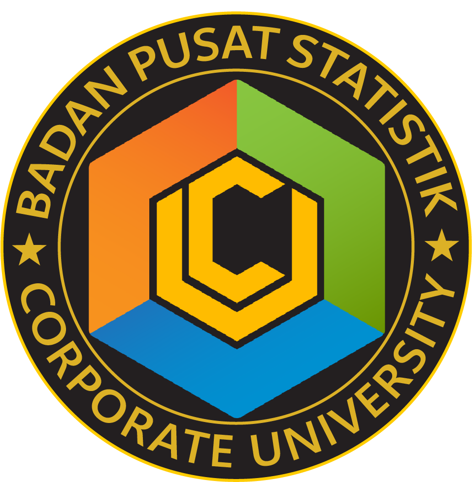

Tantangan Anda


IT Enterprise
Pelajari cara menyelaraskan strategi, tata kelola, dan arsitektur TI dengan kebutuhan organisasi. Lewat kasus layanan statistik, susun prioritas pembiayaan dan tentukan cara mengukur kinerja layanan.
Berkas misi
Dua keputusan
Jawab kedua pertanyaan berikut berdasarkan materi dan latihan tadi.
Uji pemahaman
Dua keputusan untuk Anda
Bawa ke pekerjaan
Meninjau keputusan dalam uji coba
Temuan di titik serah terima memberi dasar untuk memilih pekerjaan TI. Setelah solusi diuji, catatan waktu membantu tim menilai perubahan dari sisi pemohon.
Peta saat ini menunjukkan nomor permintaan berubah setiap kali berkas berpindah unit. Tim menargetkan satu nomor sampai tabel dikirim. Pekerjaan apa yang langsung menutup selisih itu?
Sepakati aturan nomor, lalu uji apakah kedua aplikasi mempertahankan nomor yang sama saat satu permintaan berpindah.
Setelah uji coba, aplikasi tersedia hampir sepanjang bulan. Pimpinan ingin tahu apakah pemohon menerima tabel lebih cepat. Ukuran mana yang menjawab pertanyaan tersebut?
Median waktu penyelesaian langsung mengukur lamanya pemohon menunggu. Bandingkan periode dan periksa apakah beban serta jenis permintaannya sebanding.
Misi selesai
Hasil latihan
Saat mengusulkan perubahan TI, bawa satu contoh hambatan layanan, kondisi yang Anda tuju, dan ukuran yang bisa diperiksa setelah uji coba.